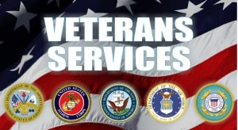

A Veteran is someone who has served in any branch of the military on active or reserve duty that has been discharged in a status above a dishonerable discharge. Some Veterans think that real vets have had to have combat experience but that is not the case. All Veterans have had to sacrifice something by serving the country so they are all deserving of recognition as such. Civilians tend to think that most Veterans have gone into combat (at least from personal experience). Only a small percentage of Veterans have actively gone into combat.
There are many issues that the Veteran community face. These include but are not limited to depression, PTSD, and mental health issues. There is also the issue of a lack of community when being discharged. The Veteran leaves the military and is alone. There are, however, plenty of groups that Veterans can join to find their community. All of these different groups push for the same things in the end. A community for Veterans to allow them to feel less isolated, resources to help Veterans with disabilities, and advocacy to the government to benefit Veterans across the country.